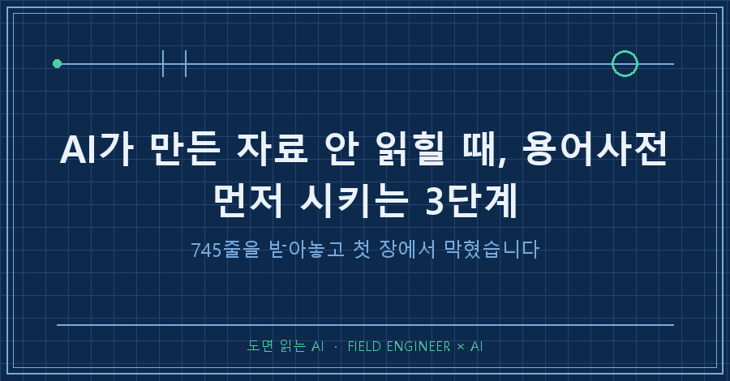
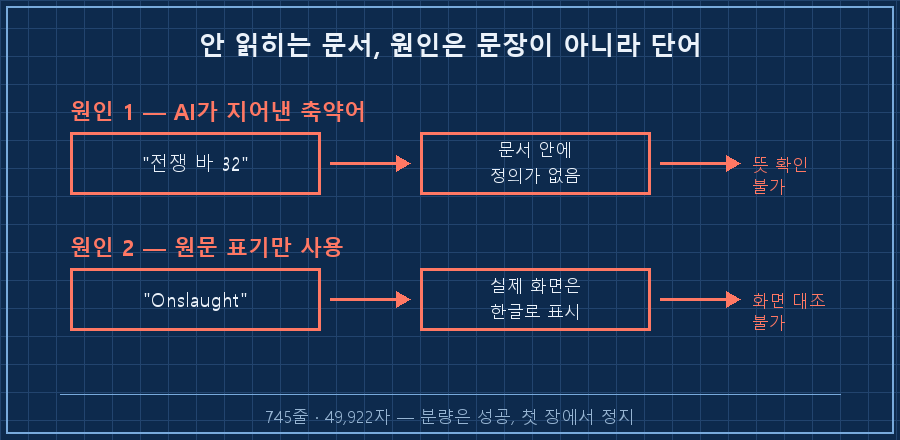
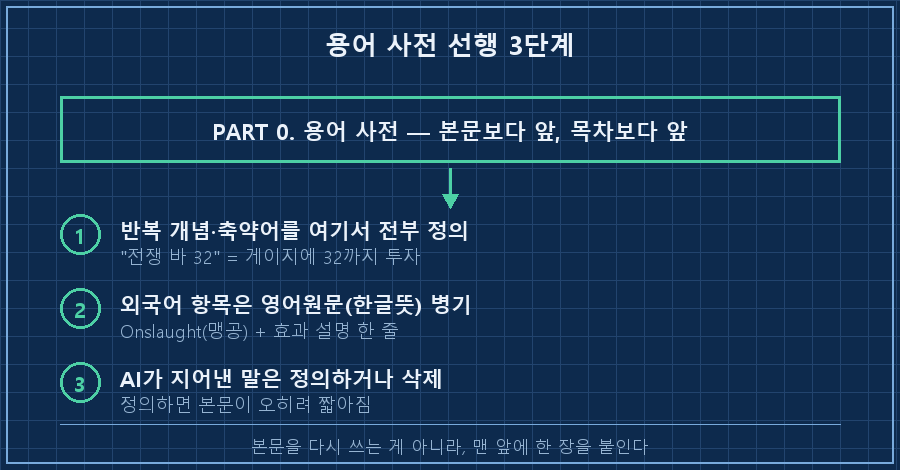
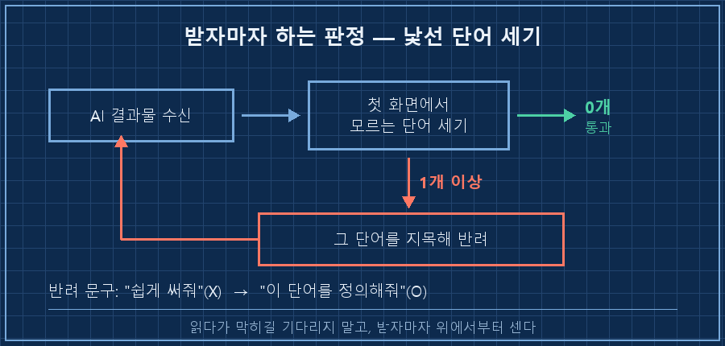

AI가 만든 자료가 안 읽혀서 통째로 돌려보낸 적 있으세요? 저는 얼마 전에 그랬습니다.
문서를 하나 맡겼더니 745줄, 약 5만 자짜리가 돌아왔어요. 목차도 구성도 나무랄 데가 없었습니다. 그런데 정작 제가 그걸 못 읽었어요.
돌려보내면서 제가 한 말이 이거였어요.
"룬바·사냥바가 무슨 말인지 모르겠고, 영어로만 적혀 있으면 무슨 스킬인지 어떻게 아냐"
결론부터 적을게요.
AI가 만든 자료가 안 읽히는 건 문장이 어려워서가 아니라, 정의되지 않은 단어가 섞여 있어서입니다. 그래서 손댈 자리도 문장이 아니라 문서 맨 앞이에요. 용어 사전을 첫 장에 먼저 쓰게 하면 뒤가 통째로 읽힙니다.
저는 십오 년째 현장 자동화 일을 합니다. 하루의 절반은 남이 쓴 매뉴얼과 도면을 읽는 데 쓰고요.
그 바닥에서 배운 게 하나 있어요. 안 읽히는 문서는 대개 글솜씨가 아니라 약어 목록이 없어서 안 읽힙니다. 도면 첫 장에 기호 범례가 왜 붙어 있겠어요.
2026년 8월에 있었던 일이고, 특정 AI 제품 얘기가 아닙니다. 긴 문서를 뽑아주는 물건이면 뭘 쓰시든 그대로 적용돼요.
1. 745줄을 받아놓고 첫 장에서 막혔어요
제가 시킨 건 개인 취미용 자료였습니다. 모바일 게임 공략집이요. 직업이 45개나 되는 물건이라 손으로 정리할 엄두가 안 나서 통째로 맡겼어요.
결과물은 745줄, 49,922자. 분량만 보면 성공입니다.
근데 본문을 읽는데 이런 문장이 계속 나와요.
레벨 2~10 구간은 스킬 욕심 내지 말고 전쟁 바 32까지 직행"전쟁 바 32"가 뭘까요. 저는 몰랐습니다.
문제는 이 표현이 AI가 스스로 만든 축약어였다는 거예요. 원래 게임에 있는 말이 아니라, 긴 개념을 짧게 부르려고 지어낸 이름이었습니다. 그런데 그게 뭔지 어디에도 안 적혀 있었어요.
여기에 하나가 더 겹쳤습니다. 게임 안 요소들이 전부 영어 원문으로만 적혀 있었던 거예요.
문서에는 "Onslaught 라인 만렙"이라고 적혀 있는데, 제 폰 화면에는 한글로 나옵니다. 대조가 안 되니 찾을 수가 없어요..
정리하면 원인이 둘이었습니다.
| 원인 | 증상 | 독자가 겪는 일 |
|---|---|---|
| AI가 만든 축약어 | "전쟁 바 32", "룬바" | 문서 안에서도 밖에서도 뜻을 못 찾음 |
| 원문 표기만 사용 | "Onslaught" | 실제 화면과 대조 불가 |

2. "더 쉽게 써줘"로는 안 고쳐집니다
처음 떠오른 주문은 당연히 "더 쉽게 써줘"였어요. 근데 그 말엔 무엇이 안 읽히는지가 안 담깁니다.
쉽게 써달라고 하면 AI는 보통 문장을 짧게 줄이고 어투를 부드럽게 바꿔요. 정작 막힌 지점인 단어는 그대로 두고요. 그러면 읽기 편한 외계어가 됩니다.
제가 안 읽힌 이유는 문장 길이가 아니라 모르는 단어 세 개였거든요. 그래서 요구를 단어 단위로 바꿔서 다시 시켰습니다.
3. 그래서 시킨 3단계
여기부터가 실제로 통한 순서예요. 어떤 문서든 그대로 씁니다.
1단계 — 용어 사전을 문서 맨 앞에 강제한다.
본문 고치기 전에 "PART 0"을 새로 만들게 했어요. 목차보다도 앞이고, 제목까지 지시했습니다.
# PART 0. 용어 사전 — 이것부터 읽으면 아래가 다 읽힌다여기에 반복해서 쓸 개념을 전부 정의하게 했습니다. 결과적으로 표 하나에 17개 용어가 들어갔어요. 평타, 오라, 도트딜, 어그로 같은 것들이요.
2단계 — 외국어 항목은 영어 원문(한글 뜻)으로 병기시킨다.
순서가 중요합니다. 한글만 쓰면 화면에서 못 찾고, 영어만 쓰면 뜻을 모르거든요. 둘 다 적어야 해요.
여기에 하나 더 붙였습니다. 번역한 한글은 게임 공식 번역과 글자가 다를 수 있으니, 항목마다 효과 설명 한 줄을 붙이라고요. 이름이 달라도 효과로 찾을 수 있게요. 실제로 문서 머리말에 이렇게 박혔습니다.
※ 한글명은 뜻 번역이라 게임 내 공식 번역과 글자가 조금 다를 수 있음
→ 괄호 안 "효과 설명"으로 대조하면 100% 찾을 수 있다3단계 — AI가 지어낸 축약어는 정의하거나 없앤다.
저를 막았던 "전쟁 바 32"는 결국 이렇게 풀렸어요.
"전쟁 바 32"라고 쓰면
= "전쟁 분야의 그 큰 게이지에 포인트를 32까지 넣어라"라는 뜻이다.
"룬 바 32", "사냥 바 24"도 전부 같은 방식.한 문장이면 될 일이었습니다.. 없애도 되고 정의해도 되는데, 정의를 택하면 본문이 짧아지니 저는 정의를 시켰어요.

4. 제대로 됐는지는 이렇게 확인해요
성공 판정 기준을 하나로 못 박아두면 편합니다. 저는 이걸 씁니다.
문서 첫 화면에서 뜻을 모르는 단어가 나오면 실패.
읽다가 막히는 걸 기다리지 말고, 받자마자 위에서부터 훑으면서 모르는 단어를 세보세요. 0개면 통과, 1개라도 있으면 그 단어를 지목해서 반려하면 됩니다. "쉽게 써줘"가 아니라 "이 단어를 정의해줘"로요.
받았을 때와 고친 뒤의 표기를 나란히 놓으면 차이가 분명합니다.
| 구분 | 반려된 표기 | 통과한 표기 |
|---|---|---|
| 개념 | 전쟁 바 32 | 전쟁 바(마스터리 게이지) 32 + 앞장에 정의 |
| 항목명 | Onslaught | Onslaught(맹공) — 효과 설명 병기 |
| 전문용어 | 어그로 | 어그로 = 적이 누구를 때릴지 정하는 것 |

자주 나오는 질문
Q. 용어 사전을 앞에 두면 글이 늘어지지 않나요?
오히려 줄었습니다. 앞에서 한 번 정의해두면 본문에서 매번 풀어 쓸 필요가 없어지거든요.
Q. AI가 지어낸 축약어인지 원래 있는 용어인지 어떻게 구분하나요?
정의 없이 갑자기 등장해서 계속 쓰이는 말이면 대개 AI가 만든 겁니다. 확실치 않으면 "이 표현이 원래 있는 용어냐, 네가 줄여 부른 거냐"고 물어보면 순순히 답해요.
Q. 한글 번역이 실제 화면과 다르면요?
그래서 이름 말고 효과 설명을 붙입니다. 번역이 어긋나도 "주변 적을 느리게 만드는 것"처럼 동작으로 적어두면 화면에서 찾을 수 있어요. 소프트웨어 메뉴든 장비 매뉴얼이든 똑같습니다.
정리하면요
제가 반려한 건 문장력이 아니라 단어였습니다. 745줄을 다시 쓰게 한 것도 아니고, 맨 앞에 한 장을 더 붙이게 한 게 전부예요.
그리고 이 요구는 매번 하기 귀찮으니까 규칙으로 만들어서 제 AI한테 박아뒀습니다. 다음 문서부터는 시키지 않아도 용어 사전이 먼저 붙어 나옵니다!
혹시 지금 쓰고 계신 걸 그대로 옮기실 거면 이 문장이면 됩니다.
문서 맨 앞에 용어 사전을 먼저 만들어라.
- 반복해서 쓸 개념과 네가 줄여 부르는 말은 전부 거기서 정의할 것
- 외국어 항목은 영어원문(한글뜻)으로 병기하고, 뜻 번역임을 밝힐 것
- 이름이 달라질 수 있는 항목은 효과 설명을 한 줄 붙일 것AI가 만든 자료를 받아놓고 어쩐지 손이 안 가는 문서가 하나쯤 있으실 거예요. 오늘 그 파일 첫 화면만 열어서, 뜻을 모르는 단어가 몇 개인지 세보시면 어떨까요?
---
반려당한 초안이 통과본보다 많이 쌓여 있는 창고, makefield.ai에 있습니다.
태그: #AI가만든자료 #AI문서정리 #AI용어정리 #AI에게문서시키기 #AI결과물검수 #AI프롬프트작성법 #AI자료만들기 #용어사전 #AI활용법 #AI로일하기 #AI에게일시키기 #개인AI에이전트 #문서자동화 #현장엔지니어 #도면읽는AI